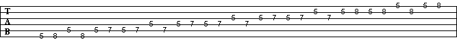
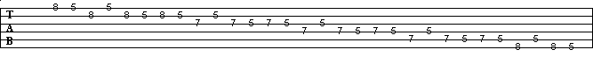
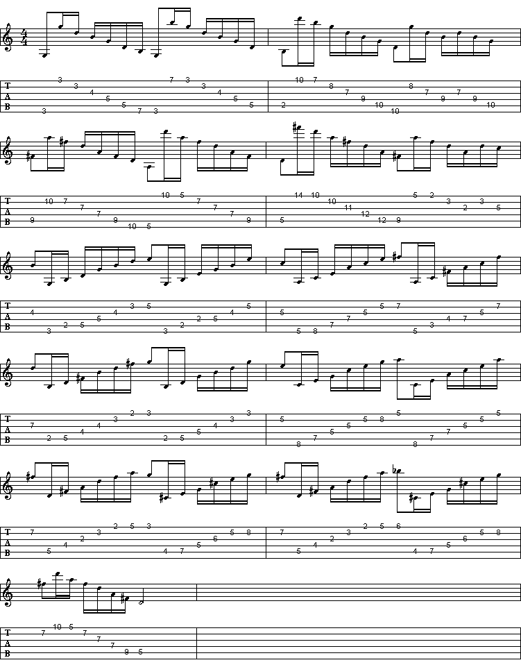
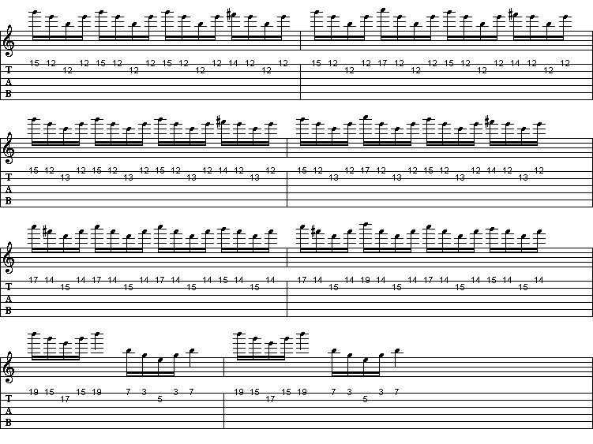
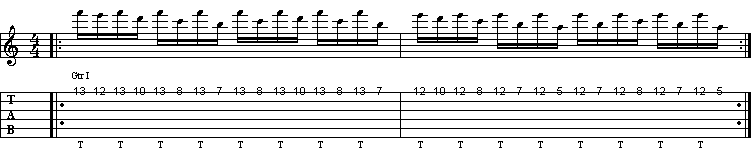

Secuencia de tres en escalas pentafonicas
 Sweep Picking de 6 y 5 cuerdas (de agudos a graves).
Este es un ejercicio de Sweep de 6 y 5 cuerdas, hace un pasaje de agudos a graves en los primeros compases, luego va de graves a agudos y termina como comenzo (de agudos a graves). Le verdad no se de donde lo saque, pero esta muy bueno, pasiencia y a practicar!!!
Sweep Picking de 2 cuerdas (Y. J. Malmsteen)
Este ejercicio es la primera parte del solo del tema Rising Force de Yngwie Malmsteen. La velocidad es mas o menos 180 negras por minuto. Muy rapido!!!
Tapping (a lo Malmsteen).
